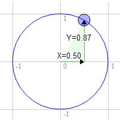
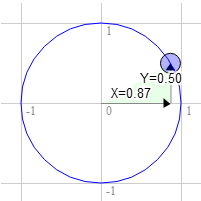

WebGL 2D Rotation
This post is a continuation of a series of posts about WebGL. The first started with fundamentals and the previous was about translating geometry.
I'm going to admit right up front I have no idea if how I explain this will make sense but what the heck, might as well try. First I want to introduce you to what's called a "unit circle". If you remember your junior high school math (don't go to sleep on me!) a circle has a radius. The radius of a circle is the distance from the center of the circle to the edge. A unit circle is a circle with a radius of 1.0.
Here's a unit circle.
Notice as you drag the blue handle around the circle the X and Y positions change. Those represent the position of that point on the circle. At the top Y is 1 and X is 0. On the right X is 1 and Y is 0.
If you remember from basic 3rd grade math if you multiply something by 1 it stays the same. So 123 * 1 = 123. Pretty basic right? Well, a unit circle, a circle with a radius of 1.0 is also a form of 1. It's a rotating 1. So you can multiply something by this unit circle and in a way it's kind of like multiplying by 1 except magic happens and things rotate.
We're going to take that X and Y value from any point on the unit circle and we'll multiply our geometry by them from our previous sample.
Here's are the updates to our shader.
<script id="2d-vertex-shader" type="x-shader/x-vertex">
attribute vec2 a_position;
uniform vec2 u_resolution;
uniform vec2 u_translation;
uniform vec2 u_rotation;
void main() {
// Rotate the position
vec2 rotatedPosition = vec2(
a_position.x * u_rotation.y + a_position.y * u_rotation.x,
a_position.y * u_rotation.y - a_position.x * u_rotation.x);
// Add in the translation.
vec2 position = rotatedPosition + u_translation;
And we update the JavaScript so that we can pass those 2 values in.
...
var rotationLocation = gl.getUniformLocation(program, "u_rotation");
...
var rotation = [0, 1];
..
// Draw the scene.
function drawScene() {
// Clear the canvas.
gl.clear(gl.COLOR_BUFFER_BIT);
// Set the translation.
gl.uniform2fv(translationLocation, translation);
// Set the rotation.
gl.uniform2fv(rotationLocation, rotation);
// Draw the rectangle.
gl.drawArrays(gl.TRIANGLES, 0, 18);
}
And here's the result. Drag the handle on the circle to rotate or the sliders to translate.
click here to open in a separate window
Why does it work? Well, look at the math.
rotatedX = a_position.x * u_rotation.y + a_position.y * u_rotation.x; rotatedY = a_position.y * u_rotation.y - a_position.x * u_rotation.x;
Let's stay you have a rectangle and you want to rotate it. Before you start rotating it the top right corner is at 3.0, 9.0. Let's pick a point on the unit circle 30 degrees clockwise from 12 o'clock.

The position on the circle there is 0.50 and 0.87
3.0 * 0.87 + 9.0 * 0.50 = 7.1 9.0 * 0.87 - 3.0 * 0.50 = 6.3
That's exactly where we need it to be

The same for 60 degrees clockwise

The position on the circle there is 0.87 and 0.50
3.0 * 0.50 + 9.0 * 0.87 = 9.3 9.0 * 0.50 - 3.0 * 0.87 = 1.9
You can see that as we rotate that point clockwise to the right the X value gets bigger and the Y gets smaller. If kept going past 90 degrees X would start getting smaller again and Y would start getting bigger. That pattern gives us rotation.
There's another name for the points on a unit circle. They're call the sine and cosine. So for any given angle we can just look up the sine and cosine like this.
function printSineAndCosineForAnAngle(angleInDegrees) {
var angleInRadians = angleInDegrees * Math.PI / 180;
var s = Math.sin(angleInRadians);
var c = Math.cos(angleInRadians);
console.log("s = " + s + " c = " + c);
}
If you copy and paste the code into your JavaScript console and type printSineAndCosignForAngle(30) you see it prints s = 0.49 c= 0.87 (note: I rounded off the numbers.)
If you put it all together you can rotate your geometry to any angle you desire. Just set the rotation to the sine and cosine of the angle you want to rotate to.
... var angleInRadians = angleInDegrees * Math.PI / 180; rotation[0] = Math.sin(angleInRadians); rotation[1] = Math.cos(angleInRadians);
Here's a version that just has an angle setting. Drag the sliders to translate or rotate.
click here to open in a separate window
I hope that made some sense. Next up a simpler one. Scale.